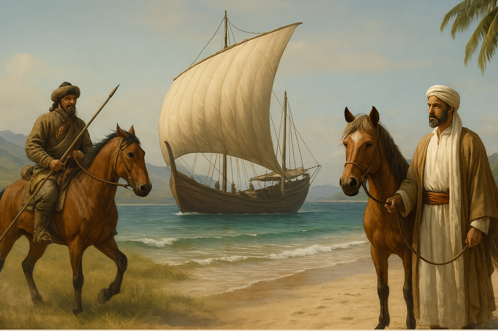
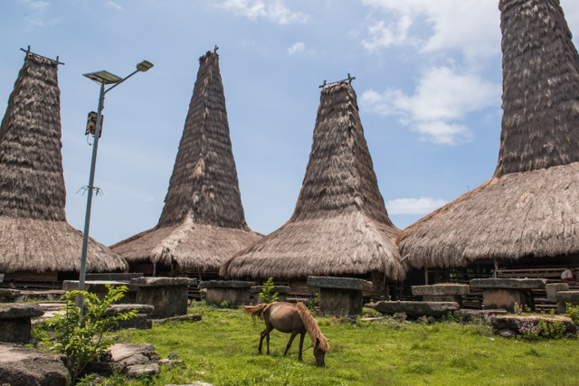
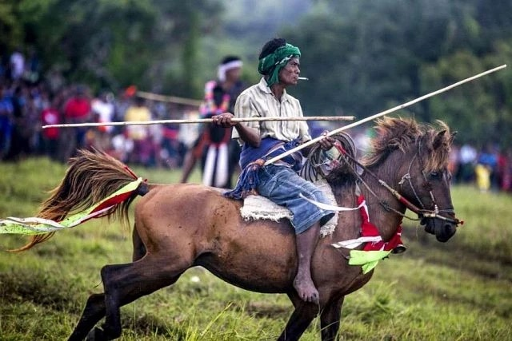

The Sandalwood Pony: Indonesia’s Spirited Island Horse
Compact, agile, and deeply woven into the life of the islands it calls home, the Sandalwood Pony has long served the people of Sumba and its neighbouring islands — not only as a means of transport, but as a living symbol of identity and pride. It is a horse shaped as much by history as by terrain, and to understand it is to understand something essential about Eastern Indonesia itself.
A Horse of Many Origins
Despite its status as a native breed, the Sandalwood Pony is the result of centuries of historical exchange. Its ancestry blends ancient Mongolian and Arab bloodlines, brought to the islands by sea traders over generations and gradually shaped by the harsh, dry environment of eastern Indonesia.
What emerged is a small but spirited equine — typically standing between 12 and 13 hands — known for its stamina, intelligence, and ability to thrive on minimal forage. With a short back, deep chest, and strong legs, the Sandalwood Pony is built for distance and survival. Though plain in appearance, it is prized, above all, for its heart.

More Than a Workhorse
In Sumba, these ponies have always been more than tools. They’ve served as herders, haulers, racers, and war mounts. For centuries, they were used to navigate the island’s arid interior and to carry goods between remote villages and coastal trading posts.
Their status rose alongside the island’s sandalwood trade — a prized export that once covered Sumba’s hills and gave the pony its name. As demand for both wood and horses grew, Sumbanese breeders became known for their stock, and the ponies were shipped to royal courts in Java and beyond.
Even today, the horse remains a marker of wealth and respect in rural Sumba. Many families continue to breed and train their ponies for both practical use and ritual display.

Tack & Riding Style
Riders of the Sandalwood Pony typically use minimalist tack. Saddles are often handmade, constructed from wood and cloth, while bridles incorporate local materials like rattan and leather. Bareback riding is common, particularly among young boys who learn to ride at an early age.
The riding style is practical and deeply adapted to the terrain — sharp turns, sudden stops, and bursts of speed are essential for both daily herding work and traditional sports like Pasola. This agility is amplified by the pony’s natural sure-footedness on Sumba’s steep and often treacherous paths.

Cultural Significance and Pasola
Perhaps nowhere is the Sandalwood Pony more visible — or more revered — than during Pasola, the island’s iconic ritual war game. Held each spring in line with the lunar calendar, Pasola pits rival clans against each other in a ceremonial horseback battle. Riders, armed with blunted spears, charge at one another across an open field, reenacting ancestral warfare in a display of courage, chaos, and connection.
The pony’s role in this spectacle is central. Agile, quick, and trained to respond to the subtlest of cues, the Sandalwood Pony carries its rider into the fray with instinctive precision. Though dangerous and sometimes controversial, Pasola is not staged for tourists. It is a sacred rite tied to fertility, land, and the cycles of rice cultivation.
“There are no reins or saddles — only balance, trust, and bond.”

A Living Symbol of Sumba
The Sandalwood Pony is more than a regional horse — it is a living conduit between Sumba’s past and present, between utility and identity. Forged by centuries of foreign influence and shaped by the island’s distinct ecology, it has carried riders to market, to battle, and into ceremonial spaces that define social order and ancestral connection.
Its worth lies not in any single trait, but in the convergence of strength, spirit, and symbolism. As island life modernises, the Sandalwood Pony continues to embody resilience and heritage — an enduring emblem of how a small horse can carry an entire culture.
Sandalwood Pony — At a Glance
- Origin: Sumba and the Lesser Sunda Islands, eastern Indonesia
- Ancestry: Mongolian and Arabian bloodlines, shaped by island trade over centuries
- Height: 12–13 hands
- Build: Short back, deep chest, strong legs — built for distance and survival
- Character: Stamina, intelligence, sure-footedness; prized for its heart more than its looks
- Tack: Minimalist — handmade wooden saddles, rattan bridles; bareback riding common
- Cultural role: Herder, hauler, race horse, war mount, Pasola ritual participant
- Status: Marker of wealth and respect; still actively bred and used in rural Sumba
Related Stories

The Horses of the Camargue
Tough, white, and semi-feral, the Camargue horse is a living part of southern France’s wetland culture — shaped by the land it roams.